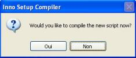
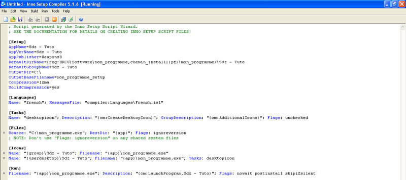
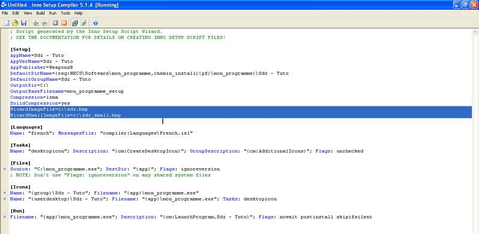
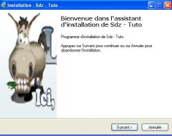
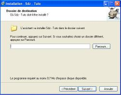

Alors, pour changer l'image d'installation, il vous faut d'abord créer votre script d'installation, c'est expliqué dans le tuto de M@teo21 ; je ne vais donc pas y revenir. ;)
Une fois votre script créé, vous arrivez à cette fenêtre :

Ici, il vous faut cliquer sur Non.
Vous arrivez donc à cette fenêtre :

Il va donc falloir rajouter 2 lignes de code pour changer les images d'installation (la grande sur le côté, et la petite en haut à droite).
Pour la grande, il faut mettre :
WizardImageFile=<chemin de l'image>
Et pour la petite :
WizardSmallImageFile=<chemin de l'image>
Moi, j'ai décidé ici d'appeler les images sdz.bmp et sdz_small.bmp ; voici ce que ça donne :

Comme vous n'avez pas compilé tout à l'heure, il va falloir le faire maintenant. Vous devrez donc cliquer sur ce bouton :
Une fois compilé, lancez votre installeur et regardez le travail. :)

Voilà cette première partie terminée. Dans la prochaine partie, vous verrez les clés registre pour le dossier d'installation.
- Votre programme a plusieurs dossiers ; alors quand vous ajoutez les fichiers / dossiers, sélectionnez le dossier où se trouve intégralement votre logiciel. Comme cela, il gardera l'arborescence et copiera tous les fichiers / dossiers en même temps.
Exemple pour un dossier dont l'arborescence est :
mon_programme\dossier1\
mon_programme\dossier2\
mon_programme\fichier_programme1.*
mon_programme\fichier_programme2.*
mon_programme\fichier_programme3.*.
Il vous suffira d'ajouter le dossier mon_programme.
Vous pouvez sélectionner plusieurs modes de compression pour vos fichiers. Pour ce faire, il vous faudra changer la valeur de la variable
Compression=
Il existe plusieurs modes de compression ; par défaut, le logiciel utilise lzma.
Il en existe plusieurs autres ; à vous de choisir celui que vous préférez :
Citation :
zip
de zip/1 à zip/9
bzip
de bzip/1 à bzip/9
lzma
lzma/fast
lzma/normal
lzma/max
lzma/ultra (attention, il utilise énormément de ressources)
none (aucune compression)
Listes des différents dossiers utiles avec leurs raccourcis :
Citation :
{app} est le dossier de votre programme.
{pf} est le dossier Program Files.
{win} est le dossier Windows.
{tmp} est le dossier temporaire de Windows.
{fonts} est le dossier des polices d'écriture de Windows.
- Vous voulez copier d'autres fichiers dans d'autres répertoires lors de l'installation. Pour cela, vous devrez utiliser le code suivant (après la balise [Files]).
- Vous voulez modifier certains textes de l'installeur. Pour cela, aucun problème : il vous suffira de faire un copier-coller du fichier french.isl et de le renommer, par exemple, en mon_programme.isl ; par la suite, ouvrez-les avec Notepad (ou avec votre éditeur de texte préféré). Vous pourrez alors modifier tout ce que vous voulez comme texte. ;)
Vous avez fait votre script avec l'assistant mais vous avez oublié quelque chose ? Voici la liste des fonctions les plus utiles :
LicenseFile=<chemin du fichier txt de licence>
InfoBeforeFile=<chemin du fichier txt affiché avantl'installation>
InfoAfterFile=<chemin du fichier txt affiché après l'installation>
Et voici ce tuto terminé. Si vous avez des questions qui ne sont pas traitées dans ce tuto, contactez-moi par MP et j'essaierai d'y répondre le mieux possible.